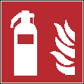

| Brandschutzzeichen | |||
|---|---|---|---|
| F003 | Feuerleiter | ||
| Bedeutung | Kennzeichnung des Standorts einer Feuerleiter | ||
| Gefahr | Ohne die Kennzeichnung ist ein schnelles Auffinden von Feuerleitern erschwert. | ||
| Erwünschtes Verhalten | Die Beschäftigten kennen die Standorte von Feuerleitern und nutzen die Feuerleitern, um von diesen aus Entstehungsbränden zu bekämpfen. | ||
| Hinweis(e) | |||
| In den Unterweisungen der Beschäftigten ist darauf hinzuweisen, dass Feuerleitern immer frei zugänglich sein müssen und Zugänge zu Feuerleitern daher nicht versperrt/zugestellt werden dürfen. Die Standorte von Feuerleitern sind in den Flucht- und Rettungsplänen, entsprechend der tatsächlichen Standorte im dargestellten Bereich, einzutragen. In den Unterweisungen ist darauf hinzuweisen, dass Feuerleitern ausschließlich im Zusammenhang mit Löscharbeiten verwendet werden dürfen. | |||
| Beispiele für mögliche Kombinationen | |||
 |
|||
| Brandschutzzeichen | |||
| F004 | Mittel und Geräte zur Brandbekämpfung | ||
| Bedeutung | Kennzeichnung des Standorts von Mitteln und Geräten zur Brandbekämpfung. | ||
| Gefahr | Ohne die Kennzeichnung ist ein schnelles Auffinden der Mittel und Geräte zur Brandbekämpfung erschwert. | ||
| Erwünschtes Verhalten | Die Beschäftigten kennen die Standorte von Mitteln und Geräten zur Brandbekämpfung und können diese zur Bekämpfung von Entstehungsbränden nutzen. | ||
| Hinweis(e) | |||
| In den Unterweisungen der Beschäftigten ist darauf hinzuweisen, dass Mittel und Geräte zur Brandbekämpfung immer frei zugänglich sein müssen und Zugänge zu Mitteln und Geräten zur Brandbekämpfung daher nicht versperrt/zugestellt werden dürfen. Die Standorte der Mittel und Geräte zur Brandbekämpfung sind in den Flucht- und Rettungsplänen, entsprechend der tatsächlichen Standorte im dargestellten Bereich, einzutragen. Dieses Sicherheitszeichen sollte angewendet werden für Mittel und Geräte zur Brandbekämpfung, für die es keine registrierten Sicherheitszeichen gibt. | |||
| Beispiele für mögliche Kombinationen | |||
ISO 7010-F001 Feuerlöscher |
ISO 7010-F004 Mittel und Geräte zur Brandbekämpfung |
ISO 7010-F002 Löschschlauch |
ISO 7010-F005 Brandmelder |
ISO 7010-F003 Feuerleiter |
ISO 7010-F006 Brandmeldetelefon |